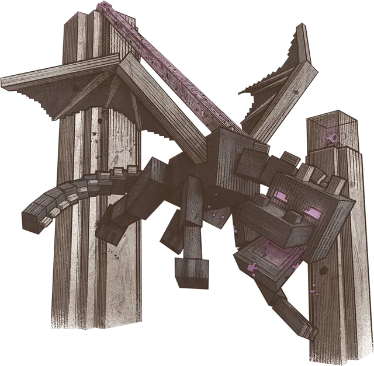

Дракон Края
Ender Dragon
Громадный Дракон, хаотично-злой

Класс Доспеха 22 (природный доспех)
Хиты 350 (20к20 + 140)
Скорость 30 футов, летая 120 футов
| мод | спас | ||
|---|---|---|---|
| СИЛ | 27 | +8 | +8 |
| ЛОВ | 14 | +2 | +2 |
| ТЕЛ | 25 | +7 | +13 |
| мод | спас | ||
|---|---|---|---|
| ИНТ | 10 | +0 | +6 |
| МДР | 15 | +2 | +8 |
| ХАР | 19 | +4 | +4 |
Навыки Восприятие +14, Скрытность +8
Сопротивление урону огонь
Иммунитет к урону некротическая энергия
Иммунитет к состояниям испуг, очарование
Чувства тёмное зрение 240 футов, пассивное Восприятие 24
Языки Драконий
Опасность 19 (22000 опыта)
Бонус мастерства +6
Особенности
Яйцо дракона. Когда хиты Дракона Края падают до 0, он излучает лучи пурпурного света, а затем исчезает, оставляя после себя инертное, угольно-черное драконье яйцо стоимостью 5000 зм.
Легендарное сопротивление (4/день). Если Дракон Края проваливает спасбросок, он может вместо этого сделать спасбросок успешным.
Действия
Мультиатака. Дракон совершает одну атаку Укусом и использует Бьющие Крылья.
Укус. Рукопашная атака оружием: +14 к попаданию; досягаемость 15 футов, одна цель. Попадание: 18 (3к6 + 8) колющего урона плюс 7 (2к6) урона некротической энергией.
Бьющие Крылья. Дракон бьет своими большими крыльями. Каждое существо в пределах 15 футов от дракона должно преуспеть в спасброске Ловкости Сл 21, иначе оно получит 10 (1к4 + 8) дробящего урона, будет отброшено на 10 футов от дракона и упадёт ничком.
Вредное дыхание (перезарядка 5–6). Дракон выдыхает гнилостный газ 60-футовым конусом. Каждое существо в этой области должно совершить спасбросок Телосложения Сл 21, получив 52 (15к6) урона некротической энергией в случае провала или половину этого урона в случае успехе. Затем дракон выбирает точку, которую он может видеть, где конус соприкасается с землей. Эта точка становится центром цилиндра газа высотой 10 футов и радиусом 10 футов, который исчезает в начале следующего хода дракона. Любое существо, которое начинает свой ход в цилиндре, получает 10 (3к6) урона некротической энергией.
Логово
Кристаллы края. Дракон Края имеет особые отношения с десятью 40-футовыми обсидиановыми башнями, разбросанными по центральному острову Края. На вершине каждой башни находится кристалл Края [End Crystal], который посылает луч исцеляющей энергии Дракону Края, когда тот пролетает поблизости. В случае смерти Дракона Края можно вернуть к жизни, поместив четыре кристалла Края [end Crystal] в портал, ведущий обратно в Верхний мир.
Исцеление кристаллами. Когда Дракон Края заканчивает свой ход в пределах 60 футов от кристалла Края [End Crystal], кристалл испускает исцеляющий луч, который заставляет дракона восстанавливать 20 хитов. Дракон может извлечь выгоду из такого исцеления только один раз за ход.
Статистики кристаллов. Кристалл Края [End Crystal] — это Большой объект с Классом Доспеха 11; 30 хитов; уязвимостью к дробящему урону и урону звуком; сопротивлением колющему и рубящему урону; и иммунитетом к яду и урону психической энергией. Когда кристалл разрушен, он взрывается в сфере разрушительной энергии радиусом 20 футов. Любое существо в этой области должно совершить спасбросок Ловкости Сл 15, получая 21 (6к6) урона силовым полем в случае провале или половину этого урона в случае успехе.
Описание
Могучий Дракон Края — единственный в своём роде — огромное летающее существо с чёрной как пустота чешуей и фиолетовыми глазами. Он парит над центральным островом Края. Никто не может сказать, страж он или узник Края, но в любом случае Дракон Края бросает вызов любому, кто входит в его владения.
Дракон Края сокрушает врагов своими огромными крыльями, покрывает врагов своим газообразным дыханием и наносит сокрушительные укусы своими мощными челюстями. Его шкура достаточно прочна, чтобы отразить любое оружие, кроме самого смертоносного.